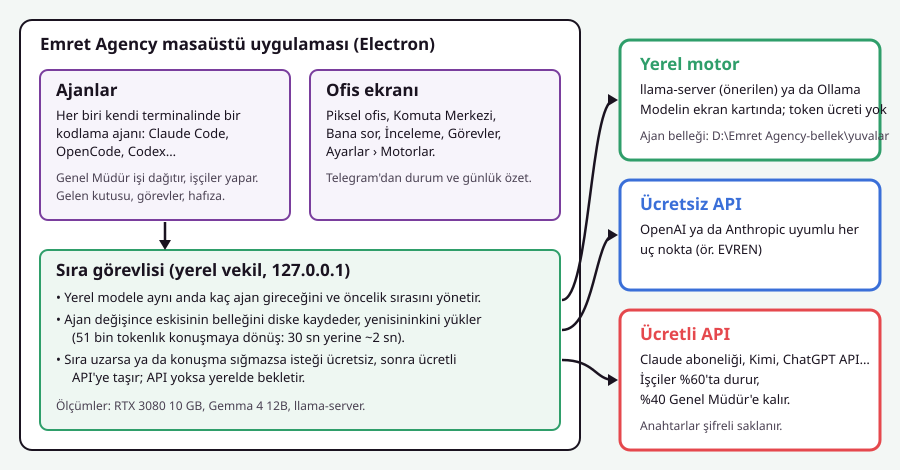
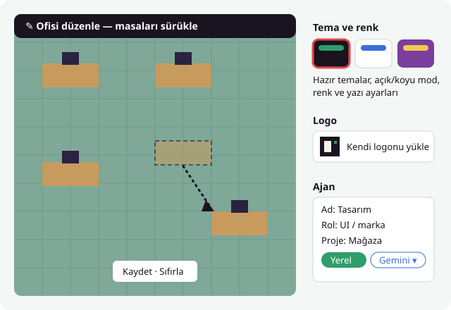
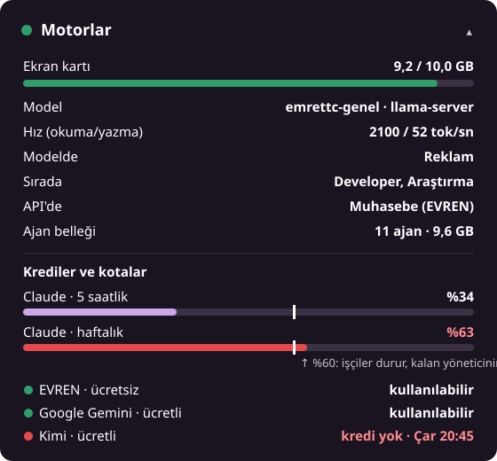
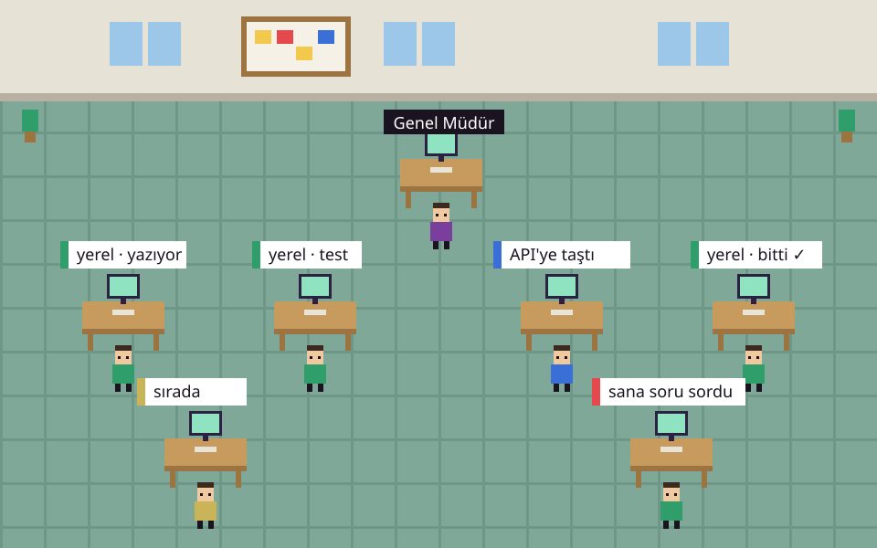

Gereksinimler ve Depoyu İndirme
Emret Agency, masaüstünde yüksek performanslı çoklu terminal ve yerel veritabanı kullandığı için bilgisayarınızda şu araçların bulunması gerekir:
- Node.js (LTS v20+): Çalışma zamanı motoru
- Git: Depo yönetimi ve ajanların dal kontrolü
- Python (3.10–3.13): Terminal modüllerinin derlenmesi için
- VS Build Tools: C++ ile masaüstü geliştirme araçları
Windows PowerShell terminalinde tek komutla eksik araçları yükleyebilirsiniz:
winget install OpenJS.NodeJS.LTS Git.Git Python.Python.3.12
Ardından projeyi GitHub'dan bilgisayarınıza çekin:
git clone https://github.com/emret-agency/emret-agency.git cd emret-agency

Tek Tıkla Otomatik Kurulumu Çalıştırma
Proje klasöründeki kurulum.cmd betiği tüm bağımlılıkları denetler, native C++ modüllerini Electron için optimize derler ve projeyi hazır hale getirir.
-Yerel parametresi ekleyin. Bu sayede önerilen Gemma 4 12B modeli de otomatik indirilip ayarlanır!
Yerel Model ile Birlikte Kurulum (Önerilen):
kurulum.cmd -Yerel
Yalnızca Harici API'lerle Çalışacaksanız:
kurulum.cmd
İşlem bilgisayar hızınıza göre 1–3 dakika sürebilir.
winget install Ollama.Ollama yazarak 1 dakikada kurabilirsiniz. Ayrıntılı yerel model rehberi için Ollama Kılavuzumuza göz atın.
Uygulamayı Başlatma
Kurulum tamamlandıktan sonra ajansınızı başlatmak için:
baslat.cmd
Sıfırdan Yeni Çalışma Alanı (Workspace) Seçimi
Uygulama ilk kez açıldığında sizden bir Çalışma Alanı Klasörü (Workspace) seçmenizi ister:
- Bilgisayarınızda dilediğiniz bir yerde boş bir klasör oluşturun (Örn:
C:\AjansAlaniveyaD:\YazilimProjelerim). - Açılan pencerede "Klasör Seç" butonuna basarak bu klasörü işaretleyin.
- Emret Agency bu klasör içine ajanların hafızalarını (
hive/), görevleri ve çalışma dosyalarını kurar. - Kişisel Veri Güvenliği: Kodlarınız ve projeleriniz kesinlikle bu klasörün dışına çıkmaz ve harici sunuculara sızdırılmaz.

Yapay Zekâ Motorlarını ve API Anahtarlarını Ayarlama
Uygulamanın sol alt menüsünden veya dişli simgesinden Ayarlar › Yapay Zekâ Motorları (veya Motorlar) sekmesini açın. İstediğiniz motorları bağlayabilirsiniz:
Google Gemini Hızlı / Uygun
Google AI Studio'dan aldığınız API anahtarını girin. En güncel gemini-flash-latest ve gemini-pro-latest modelleri otomatik listelenir.
Yerel Model (Ollama) %100 Ücretsiz
Ekran kartınızda sıfır token ücretiyle çalışır. Adres: http://127.0.0.1:11434/v1. Varsayılan model: emrettc-genel.
OpenAI (ChatGPT) Ücretli / Codex
GPT-4o, GPT-5 modelleri veya Codex CLI ile doğrudan ChatGPT aboneliğiniz üzerinden oturum açarak çalışır.
Moonshot Kimi Anthropic Uyumlu
Anthropic tel protokolünü desteklediği için Claude Code ajanlarının da doğrudan yedek motoru olabilir.
NVIDIA NIM & EVREN Açık Kaynak
NVIDIA NIM üzerinden DeepSeek modelleri veya EVREN LLM Gateway kurumsal uç noktaları.
Özel Uç Nokta (Custom) Özgür
Kendi yerel LM Studio, vLLM veya sunucu adresinizi yazarak dilediğiniz açık kaynak modeli bağlayabilirsiniz.
Bağlantıyı Test Etme:
Her kartın üzerindeki "Bağlantıyı Test Et" butonuna tıklayın. Yeşil onay işareti belirdiğinde sağlayıcının güncel modelleri anında sisteme dahil edilmiş olur.
Varsayılan Motoru ve Kota Korumasını Ayarlama
Aynı sayfada ajansınızın çalışma stratejisini belirleyin:
- Varsayılan İşçi Motoru: Yeni açılan işçilerin (Developer, Tasarımcı vb.) hangi motorda başlayacağını seçin (Örn: Yerel çalışmak için Genel İşler - emrettc-genel).
- API'ye Taşma (Spillover): Yerel model kuyruğu uzadığında veya konuşma geçmişi yerel bağlama sığmadığında otomatik olarak ücretsiz veya ücretli API'ye taşmasını sağlayın.
- %60 / %40 Kuralı: Ücretli Claude aboneliğinde işçiler kotanın %60'ına gelince otomatik durur ve yerel modele döner; kalan %40 Genel Müdür'e rezerve kalır.

İlk Projeyi Açma ve Çalışmaya Başlama
Artık her şey hazır! Şimdi ilk görevinizi verebilirsiniz:
- Komuta Merkezi › Sohbet: Genel Müdür'e ne yapmak istediğinizi yazın (Örn: "Yeni bir React + TypeScript dashboard projesi kur ve auth ekranını hazırla").
- Genel Müdür İşi Dağıtır: Projeyi mimari adımlara böler, gerekli işçi ajanları (Developer, Tasarımcı) masalarına oturtur.
- Piksel Ofis Canlanır: Ajanlar kendi masalarında kod yazarken durum balonlarında ne yaptıkları görünür.
- Bana Sor Panosu: Kritik kararlar ve riskli işlemler (dosya silme, git push vb.) sol menüdeki kırmızı rozetle onayınıza gelir.
- İnceleme Masası: Ajanlar işlerini bitirdiğinde kod farklarını (diff) inceler, testleri koşturur ve tek tıkla ana dala birleştirirsiniz.

Bonus: Masaüstü Programı (.exe) Olarak Paketleme
Projeyi kaynak koddan çalıştırmak yerine çift tıklanabilir bir Windows masaüstü programı haline getirip başka bilgisayarlara kurmak isterseniz:
npm run dist:win
Bu komut dist/ klasöründe doğrudan kurulabilir bir setup .exe dosyası üretir. Bu programı kuran son kullanıcıların bilgisayarında Node.js, Python ya da derleme araçlarının bulunmasına gerek kalmaz.